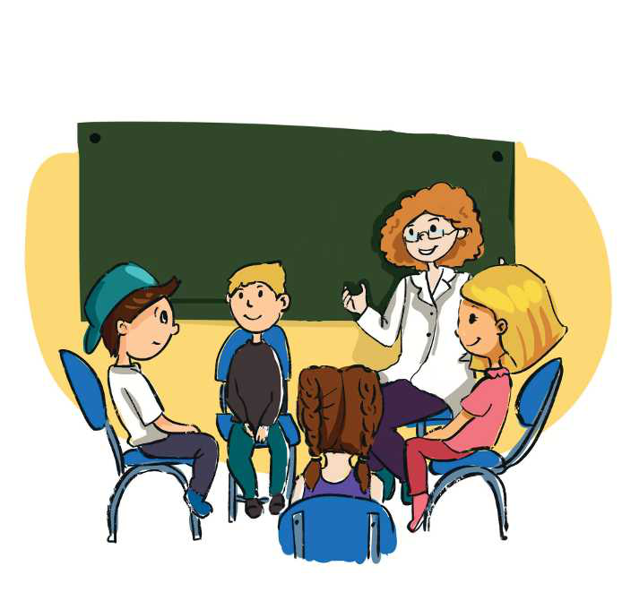

TEMATIKA 5: MJEDISI DHE SHËNDETI
2.ZHURMË DHE PLUHUR NË PUNËTORINË E XHAXHI BURIMIT

- Sa e bukur është pranvera, me cicërima zogjsh e gurgullima uji! Kjo jo vetëm që është e bukur, por dhe e shëndetshme, - tha mësuesja. Pastaj pyeti nxënësit të tregojnë të kundërtën e asaj situate. Drita dhe Dielli ngritën dorën. Atyre iu kujtua shëtitja që kishin bërë në punëtorinë e xhaxhi Burimit.
- Unë u kënaqa me natyrën atë ditë. Në punëtori kishte gjëra interesante, por më ra në sy sa shumë pluhur bëhej nga përpunimi i drurit, - tha Dita.
- Po! Madje aty kishte shumë zhurmë! - kujtoi Dielli. - Edhe në vendet ku ndërton babai im ka pluhur e zhurmë, - vazhdoi Dielli.
Nxënësit vazhduan të sillnin shembuj të vendeve me pluhur dhe zhurma.